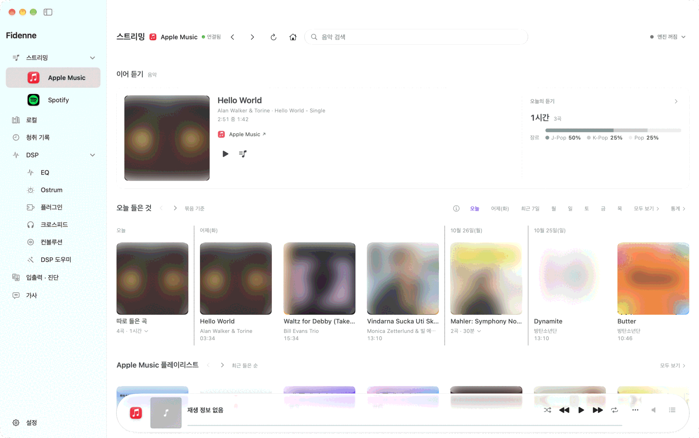
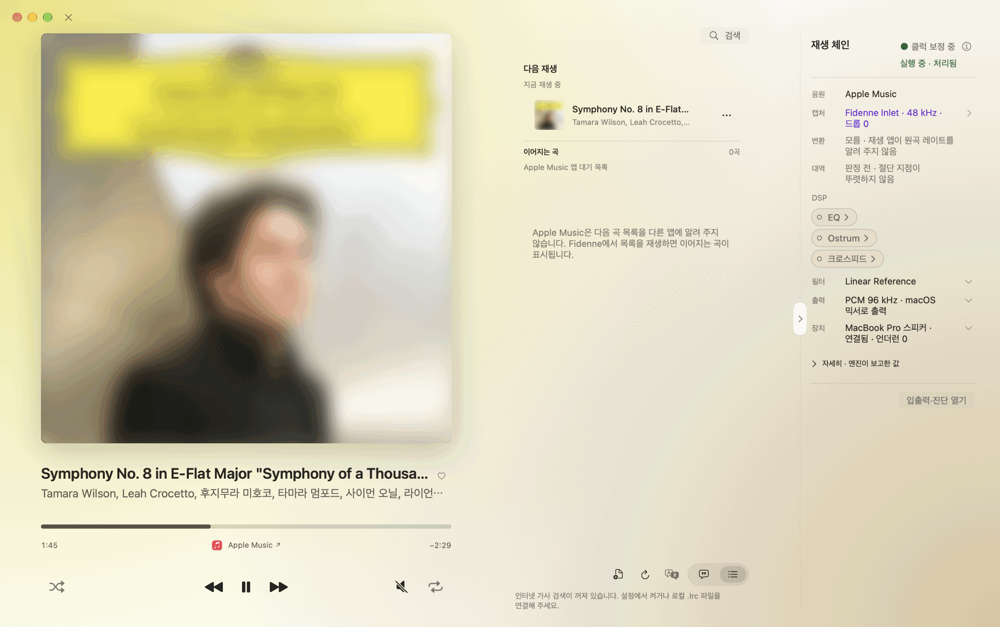
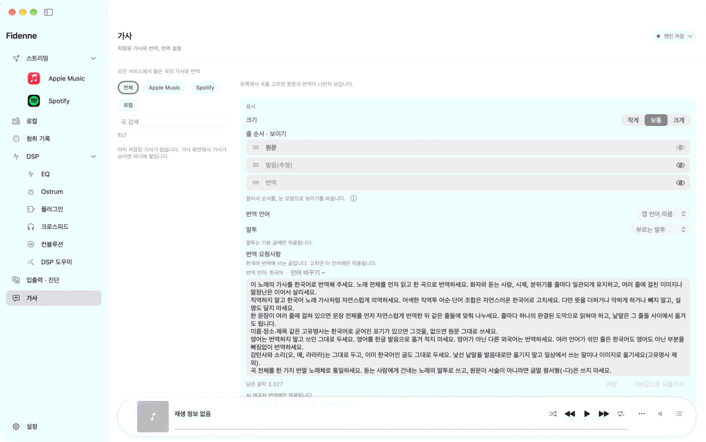
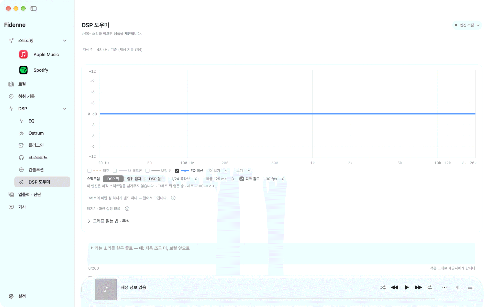
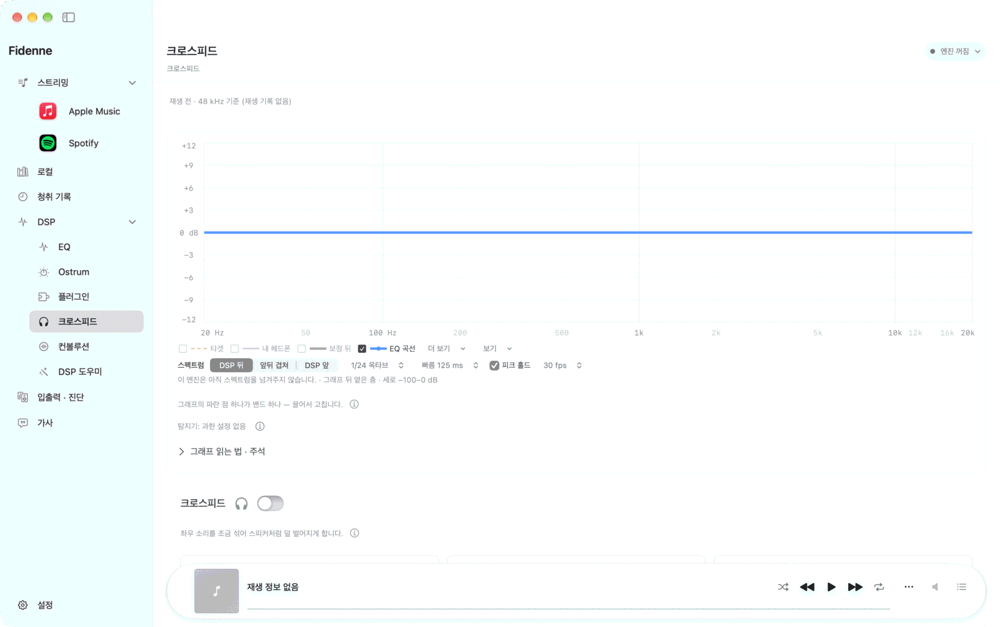
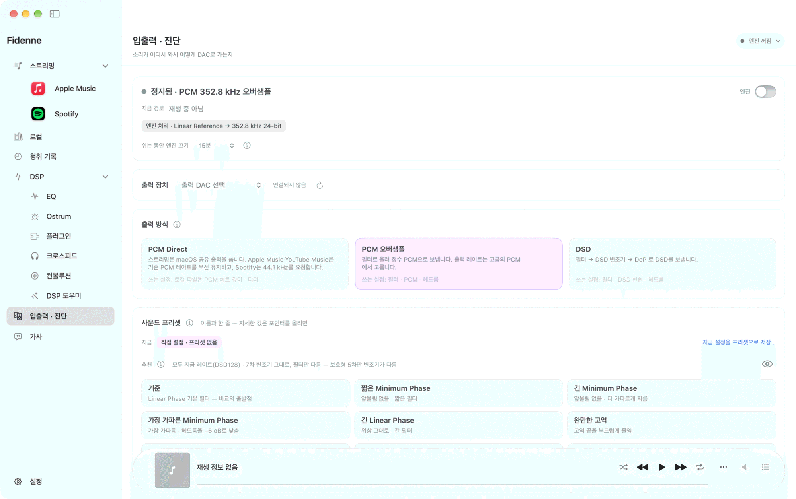
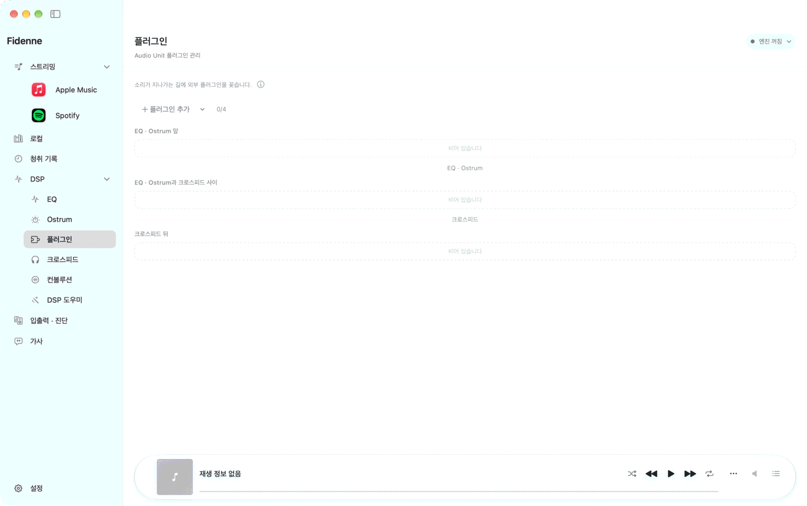
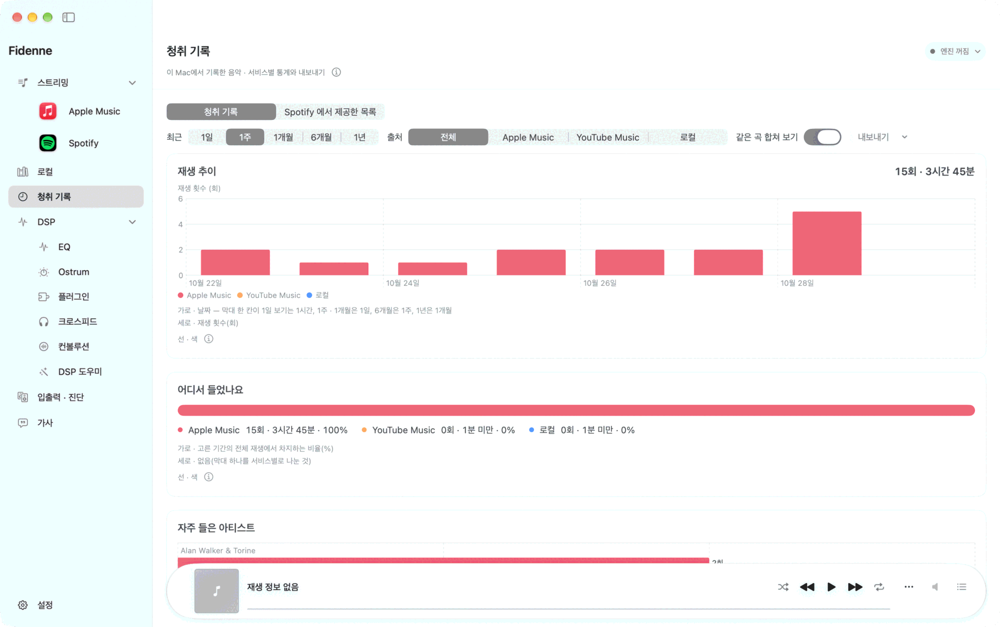
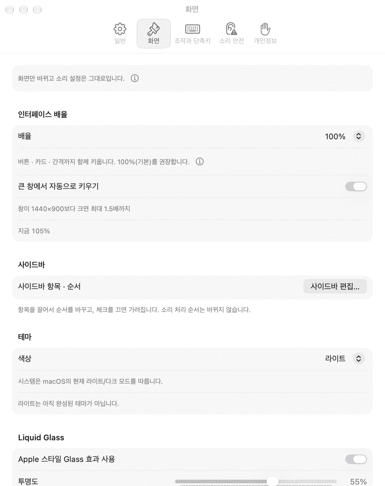

세 언어, 두 가지 테마
한국어 · English · 日本語와 라이트 · 다크 화면을 지원합니다. 앱의 언어는 macOS의 앱별 언어 설정을 따릅니다. 곡과 앨범 이름은 서비스가 제공하는 표기 그대로 보입니다.
Fidenne · 0.7
듣던 앱은 그대로. EQ · Ostrum · 크로스피드로 소리를 다듬고, 연결한 외장 DAC로 보냅니다. 음악과 가사, 소리가 지나가는 길을 한 창에서 봅니다.
릴리스 보기Apple 실리콘 Mac · macOS 15 이상 · 유선 USB 외장 DAC
내려받기와 배포 상태는 릴리스 페이지에서 확인하세요.

0.7
더 읽기 편한 화면, 직접 고르는 번역, 내가 결정하는 소리 설정.
한국어 · English · 日本語와 라이트 · 다크 화면을 지원합니다. 앱의 언어는 macOS의 앱별 언어 설정을 따릅니다. 곡과 앨범 이름은 서비스가 제공하는 표기 그대로 보입니다.
원문 · 발음 · 번역의 순서와 표시를 고르고, 발음 줄을 직접 고칩니다. 번역 문체는 번역할 언어마다 따로 편집하고 기본값으로 되돌릴 수 있습니다.
DSP 도우미에 바라는 소리를 적고 설정 샘플 셋을 받습니다. 샘플마다 의견을 적어 다시 요청하고, 고른 설정만 적용합니다.
Audio Unit 효과를 소리 처리 순서에 더하고, 각 카드에서 자체 화면을 펼칩니다. Playback Chain에서 켜짐 상태와 소리가 지나는 순서를 확인합니다.
처음 재생하기 전에 DAC나 앰프 음량을 충분히 낮춰 주세요.
M1 이후 Apple 실리콘 Mac과 macOS 15 이상이 필요합니다. 외장 USB DAC를 권하며, DSD 출력에는 고른 DSD 레이트를 받는 DAC가 필요합니다. 내장 스피커 · AirPods · HDMI로도 Fidenne이 소리를 처리해 PCM으로 보내고, 마지막에 macOS가 섞어 내보냅니다.
릴리스 페이지에서 .dmg 파일을 받아 열고 Fidenne을 응용 프로그램 폴더로 옮깁니다. 응용 프로그램 폴더에서 앱을 엽니다.
처음 설정에서 소리가 나갈 DAC를 고릅니다. 입력은 Fidenne Inlet 또는 시스템 탭을 고릅니다. Inlet은 별도 설치가 필요하고, 시스템 탭은 설치 없이 48 kHz로 받습니다. 권한은 해당 기능을 처음 쓸 때 macOS가 묻습니다.
재생 앱에서 곡을 고릅니다. Fidenne에서 출력 방식을 확인하고 시작 안내를 따릅니다. 소리가 나오는 것을 확인한 뒤 DAC나 앰프 음량을 천천히 올립니다.
음악 홈에서 이어 듣기와 재생목록을 열고, 로컬 보관함에서 파일을 재생합니다. 재생은 각 서비스가 합니다 — Apple Music은 Mac의 음악 앱, Spotify는 Spotify 앱, YouTube Music은 브라우저(Safari · Chrome · Edge) 탭이 재생합니다. 연결과 사용 가능한 조작은 서비스별로 다릅니다.
표지와 가사, Playback Chain을 함께 봅니다. 앨범 화면의 소리 처리 칸도 다른 칸과 같은 바탕을 사용해 가사와 조작에 집중할 수 있습니다.

가사 페이지에서 LRC · TXT 파일을 연결하거나, 동의한 뒤 LRCLIB에서 가사를 찾습니다. 원문 · 발음 · 번역의 순서와 표시를 고를 수 있습니다. 직접 고친 발음은 앨범 화면과 가사 보기에도 같이 반영되고, 추정한 발음으로 되돌릴 수 있습니다.
AI 제공자와 모델을 고르고 번역할 언어의 문체 요청을 편집합니다. 기본값으로 되돌리면 그 언어의 기본 문체가 돌아옵니다. 말투는 「부르는 말투」(기본 — 노래 가사처럼 한 곡을 한 가지 말투로)와 「원문 말투 따름」(원문의 존댓말 여부를 따름) 중에서 고릅니다. 한국어로 번역할 때 영어 표현은 그대로 둡니다. 예전 요청이 옮겨졌다면 앱의 안내에서 내용을 확인하세요. 저장한 번역은 설정을 바꿔도 자동으로 다시 만들지 않습니다.

DSP 도우미에서 제공자와 모델을 고르고 요청을 보냅니다. 약하게 · 중간 · 강하게 세 샘플의 바뀌는 값을 확인하고, 원하는 샘플만 적용합니다. 각 샘플에 의견을 적어 새 샘플 셋을 받을 수 있습니다. 도우미가 적용한 샘플 사이를 바꿀 때 불필요하게 다시 누를 필요가 없습니다.
요청 뒤 다른 곳에서 샘플이 바꿀 값을 수정했다면 적용 전에 달라진 항목과 이유를 확인합니다. 적용은 되돌릴 수 있습니다. 보정 제안은 별도로 판단할 수 있으며, 자동 보정에 동의한 경우에는 Preamp만 낮춥니다. 0.7에는 도우미의 들어 보기 기능이 없습니다.

EQ는 Parametric · Minimum Phase FIR · Linear Phase FIR에서 고릅니다. Ostrum은 Bass Sound · Mid-Hi Tune · Width를 조절합니다. 크로스피드는 양쪽 채널을 섞는 정도를 조절하며, 0.7의 공간 관련 페이지 이름은 크로스피드입니다.

입출력 · 진단에서 PCM Direct, DSP를 거치는 PCM 출력(44.1 ~ 768 kHz), DSD 변환을 구분해 고릅니다. 정밀 · 안전 · Trellis 등 변환 방식은 해당 출력에서 사용할 수 있는 선택지를 따릅니다. CLANS는 44.1 kHz 계열 DSD128 · DSD256에서 쓸 수 있는 시험 방식입니다. Trellis는 부하가 커서 이 Mac이 제시간에 끝내지 못하면 재생을 멈추고 「변환 방식 고르기」 단추와 함께 정밀 · 안전 · CLANS를 권합니다. 이상하면 정밀로 되돌리세요. 장탭 필터에는 Cardinal Sinc 128K · 64K(와 따라감 짝)가 있습니다.

플러그인 페이지에서 설치한 호환 스테레오 Audio Unit 효과를 추가합니다. 카드에서 켜고 끄기 · 자리 · 순서를 고르고, 자체 화면을 펼쳐 값을 바꿉니다. 각 편집기는 따로 열고 닫을 수 있습니다. 플러그인과 출력 레이트에 따라 사용할 수 있는 기능이 다릅니다.

청취 기록에서 전에 들은 곡과 들은 시간을 확인합니다. 기간과 시간 표기도 고른 화면 언어에 맞춰 보입니다. 서비스에 따라 기록과 통계에 포함되는 범위는 다릅니다.

설정에서 테마 · 화면 크기 · 조작 방법과 개인정보 선택을 바꿉니다. 한국어 · 영어 · 일본어는 macOS의 앱별 언어에서 고릅니다. 앱이 만든 안내와 시간 표시는 화면 언어를 따르고, 서비스의 곡 정보는 바꾸지 않습니다.

소리가 나지 않으면 입력 · 출력 장치와 출력 방식을 먼저 확인하세요. 문제가 계속되면 앱에서 지원용 진단을 내보내고, 내용을 확인한 뒤 지원 메일로 보내세요. 앱은 대신 보내지 않습니다. 이상한 순간에 ⌥⌃⌘K(도움말 › 방금 이상했음 표시)를 누르면 그 시각이 진단 기록에 표시되어 찾기 쉽습니다.